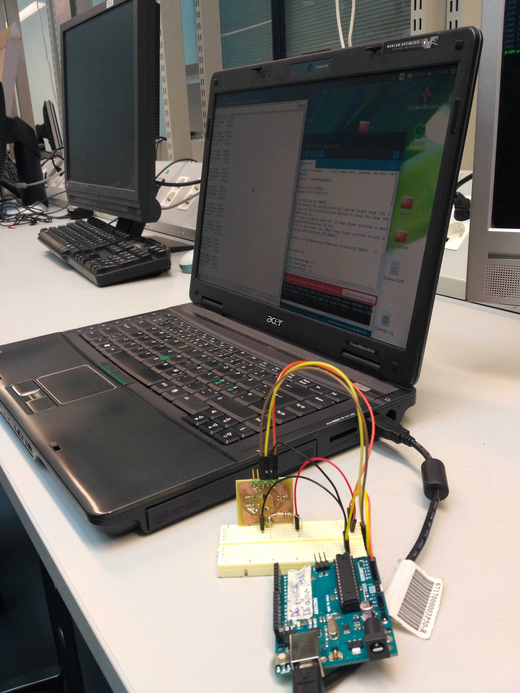

Advertisement page
The “sensor name” is a standalone, self powering, wireless sensor unit that can serve multiple functions in illumination controlling network.
Main features:
● Self powered
● Wireless communication
● Secure data confirmation
● Easy to install
● no external wires
● Multiple configurations for single hardware
● small footprint
● no screws needed
● futuristic design
It has a Ambient light and close range proximity measurement capabilities that can be configured to function for different purposes. The solar panel powered sensor can be easily moved from location to another and attached to almost any surface without need of any kind of wiring. A supercapacitor is used to store the harvested energy efficiently and without need for external battery charging circuits.
Wireless communication is performed solely on BLE advertisements, which decreases the power usage and simplifies the utilization process. No connection setting up, the central device will just listen to the data provided by the sensor. To make sure there aren’t any packet injection to the network, AES encryption has been utilized to make each advertisement sent confirmable.
The same hardware unit can be easily configured for different tasks. Some possible application uses could be non-touch light switch and dimmer, a daylight harvesting sensor, a workstation presence sensor and access control.